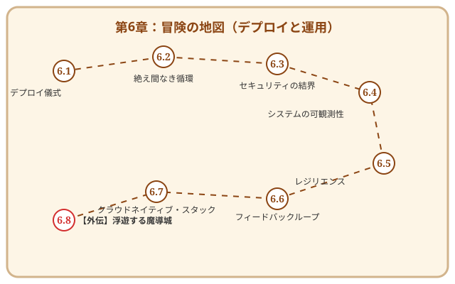

第6章 進化する生命体——デプロイと運用

この章で手に入れる力
第5章で、あなたはリファクタリングの技法でコードを美しく磨き上げる力を手に入れました。テスト（第4章）という安全網に守られながら磨かれたコードも、工房の中に閉じこもったままでは、誰の役にも立てません。
ソフトウェアの真の価値は、ユーザーの手に届いた瞬間に初めて生まれます。工房で丹精込めて作り上げた「動く像」を、広大な外界——本番環境——へと解き放ち、そこで自律的に活動し、成長し続ける「生命体」へと進化させること。それが、この章のテーマです。
この章では、デプロイを「恐怖の儀式」から「日常の営み」へと変える技術、システムの健康状態を感じ取る可観測性、そしてユーザーとの対話を通じて共に進化するフィードバックループまで——ソフトウェアに命を吹き込み、育て続けるための知恵を学びましょう。
冒険の地図

読了後のあなた
この章を読み終えると、あなたは以下のことができるようになります。
- 解き放つ: Blue/Greenデプロイやカナリアリリースで、安心してソフトウェアを本番環境へ届けられる
- 自動化する: CI/CDパイプラインで、コードを書いてから本番に届くまでの流れを自動化できる
- 守る: セキュアコーディングの原則とDevSecOpsで、ソフトウェアを脅威から守れる
- 感じ取る: ログ・メトリクス・トレースの三位一体で、システムの健康状態を把握できる
- 備える: Circuit Breakerやカオスエンジニアリングで、予期しない事態にも強いシステムを設計できる
- 対話する: Feature FlagsやA/Bテストで、ユーザーの反応を見ながらソフトウェアを進化させられる
さあ、工房の扉を開き、あなたのソフトウェアを広い世界へ送り出しましょう。
さらに学ぶためのリソース（章全体）
- 📚 書籍: Gene Kim他『The DevOps ハンドブック 理論・原則・実践のすべて』（DevOpsの全体像を理解するための決定版）
- 📚 書籍: Betsy Beyer他『SRE サイトリライアビリティエンジニアリング ―Googleの信頼性を支えるエンジニアリングチーム』（運用をエンジニアリングで解決するSREの聖典）
- 📚 書籍: Mike Julian『入門 監視 ―モダンなモニタリングのためのデザインパターン』（可観測性の基本から実践までを学べるガイド）
- 📚 書籍: Jez Humble, David Farley『継続的デリバリー 信頼できるソフトウェアリリースのためのビルド・テスト・デプロイメントの自動化』（CI/CDの原則と実践を網羅した名著）
- 📚 書籍: Ron Kohavi, Diane Tang, Ya Xu『A/Bテスト実践ガイド 真のデータドリブンへ至る信用できる実験とは』（大規模な仮説検証を支える理論と実践）
📜 賢者伝説（学術論文）
- 📄 00s: Roy T. Fielding "Architectural Styles and the Design of Network-based Software Architectures" (2000)（現代のWebの基盤であるRESTアーキテクチャスタイルを定義した伝説的学位論文）
- 📄 00s: Werner Vogels "Eventually Consistent" (2009)（AmazonのCTOが、大規模分散システムにおける可用性と整合性のトレードオフを説いた重要論文）